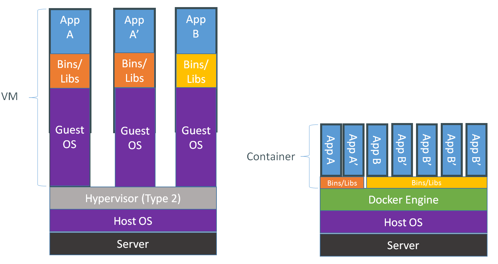

Docker
Atelier - Developer Day 2014
Animé et crée par Ludovic Meurillon
Quelques explications
VM & Container
DotCloud & Docker
Dockerfile
Les RPM ont leur spec, Vagrant a son vagrantfile, ...
Les instructions
FROM <image>
Définit l'image de base sur laquelle démarrer le build
RUN
Lance une commande et commit le résultat dans une nouvelle image
exemple : un build maven
COPY <src> <dest>
Copie le fichier <src> dans <dest> au sein du container
exemple : un war
Exemple
FROM tutum/tomcat:7.0 MAINTAINER Developer Day <devday@orange.com> COPY ./target/monwar.war /tomcat/webapps/monwar.war
Build
sudo docker build -t devday/appli .
Run
sudo docker run -it -v /home/data:/data --name appli devday/appli
Run - Volumes
-v /home/data:/data
"Monte" le repertoire /home/data de la machine hôte dans /data du container
Run - Nom
--name appli
Permet de nommer le container "appli" et faire ensuite
docker [start|stop|logs] appli
Run - Image
devday/appli:latest
Base le container sur l'image devday/appli dans sa dernière version disponible
Run - Link
Faire un lien entre 2 container présents sur la même machine
Run - Link - Exemple
docker run --name mysql -e MYSQL_ROOT_PASSWORD=kermit mysql:5.6
Test
docker run --name appli --link mysql:db ubuntu:14.04 "env"
DB_PORT=tcp://172.17.0.23:3306 DB_PORT_3306_TCP=tcp://172.17.0.23:3306 DB_PORT_3306_TCP_ADDR=172.17.0.23 DB_PORT_3306_TCP_PORT=3306 DB_PORT_3306_TCP_PROTO=tcp DB_NAME=/appli/db DB_ENV_MYSQL_ROOT_PASSWORD=kermit DB_ENV_MYSQL_MAJOR=5.6 DB_ENV_MYSQL_VERSION=5.6.20
Sous le capot
Service
un démon linux avec API HTTP
Fichiers
diff
containers
images
Réseau
iptables (NAT, Firewall)
Firewall
docker run -d --name mysql -e MYSQL_ROOT_PASSWORD=kermit mysql:5.6
docker run -d -t --name appli --link mysql:db ubuntu:14.04
Firewall
sudo iptables -L
... Chain FORWARD (policy ACCEPT) target prot opt source destination ACCEPT tcp -- 172.17.0.21 172.17.0.22 tcp spt:mysql ACCEPT tcp -- 172.17.0.22 172.17.0.21 tcp dpt:mysql ...
NAT
docker run -d --name mysql -p 3308:3306 -e MYSQL_ROOT_PASSWORD=kermit mysql:5.6
NAT
sudo iptables -t nat -L
... Chain DOCKER (1 references) target prot opt source destination DNAT tcp -- anywhere anywhere tcp dpt:3308 to:172.17.0.23:3306 ...
Registry
Deployer les images dans des registry internes
Lancer un registry
docker run -p 5000:5000 --name registry -d registry
Livrer
docker tag <image> localhost:5000/<image>
docker push localhost:5000/<image>
Utiliser
docker pull localhost:5000/<image>